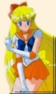

Entity » The Warrior
» On the drawing board
Slight changes to the senshi's battle fuku, or battle outfit, are visible throughout the five seasons of Sailormoon. Usually the fuku upgrades along with her henshin and powers. The small variabilities are listed here to let you know exactly what changed, from the tiara to the color of the shoes. We shall start with the first season of Sailormoon.
Sailor Venus Fuku: SM and SMR Season
The fuku of Sailor Venus from the first season is pretty basic, the tiara has a yellow/gold jewel on it, dots for earrings, an orange choker with no ornaments, and sort of round bows for the chest and the back. Also note that in the middle of her chest bow, the ornament is a round circle. This will change later in the series, when she upgrades her powers. Everything seems to be of a rounded shape, this will also change later in the series, where the fuku becomes visibly sharper along the edges. The shoes are orange Mary-Janes. Also, there are 2 white lines along the edge of her collar. This will also change as the series progresses.
Sailor Venus Fuku: S Season
click to see the S season fuku
As the series progresses, we see a slight change in the shape of the fuku, as I mentioned earlier. Starting in the S season, the fuku is more sharper along the edges, the artwork improves over all. You'll notice that the edges of Sailor Venus's bow are pointier, as well as the edges of her skirt and her collar. The edges of the bow on her head has also improved, this is all mainly due to the more specific artwork the animators put in from the S season and on. Aside from those little changes, the overall fuku did not change all that much.
Super Sailor Venus Fuku: SuperS Season
click to see the SuperS season fuku
In the SuperS Season, the senshi were given new powers and thus, they have a fuku change as well. There are plenty of small differences on Sailor Venus's fuku as well as the other senshi. First, there's the choker has a star in the center now, for Venus it's orange. The earrings are still dots, but the ornament in the middle of her chest bow has changed from a circle to a light orange heart. There are also changes to the shoulder part of her fuku. There were originally 3 rings around her shoulder, now there are 2 rings along with an addiction of a somewhat transparent wrap branching out from the rings on either side. Along the edges of her collar, there used to be 2 white lines near the border. Now there is only one line bordering each collar. Finally, down to her back bow, the tails of the bow have been made longer than before, and the bow seems to be a bit bigger than before so it's more visible now.
Sailorstar Venus Fuku: Manga Exclusive
click to see the manga fuku
This version of the Sailor Venus fuku is only shown in the manga, as the final powerup of senshi power and therefore, a fuku change is needed as well.^-^ As you can see, the structure of the fuku is almost the same, but there are some major differences as well. To start off, her earrings now have a star dangling from each ear as well as dots. Her choker also has an orange star in the center, and the entire collar points down into a "V" instead of just circling around her neck. Her collar still has one line along the border, but now it's a slight yellow color instead of the white shown in the anime. Instead of the usual 2 white rings around her shoulders, she now has two semi-transparent orbs on her shoulders, followed by the 2 rings, now a shining orange color. In the center of her bow, instead of a heart shaped or round ornament, it's now a star with delicate designs on it. Those glooves that only reached her elbow in the anime are extended to the middle of her upper arm. The lines that curved at her bosom are no longer there, and there's a slinder orange ribbon that forms a "V" shape down to her stomach, held together by a single orange star on one end while they run behind her back and fall in long straps all the way down a little past her knees. The yellow bow's tails are short now, and her skirt now consists of several layers of satin, varying in colors of orange and yellow. Finally, note her footwear, which are now boots instead of Mary-janes. These boots reach up to her knees and are entirely white except for the very top, which forms into a "V" again, complete with a single orange star at the tip of the "V."
» Check out the Sailor V fuku!
{kind=link}
{kind=link}
{kind=link}